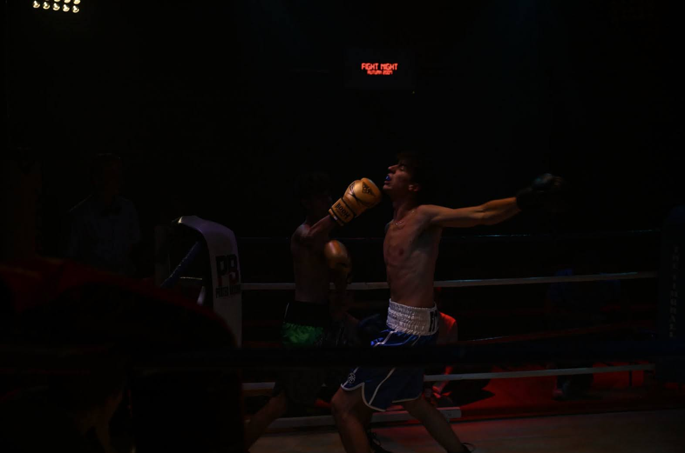
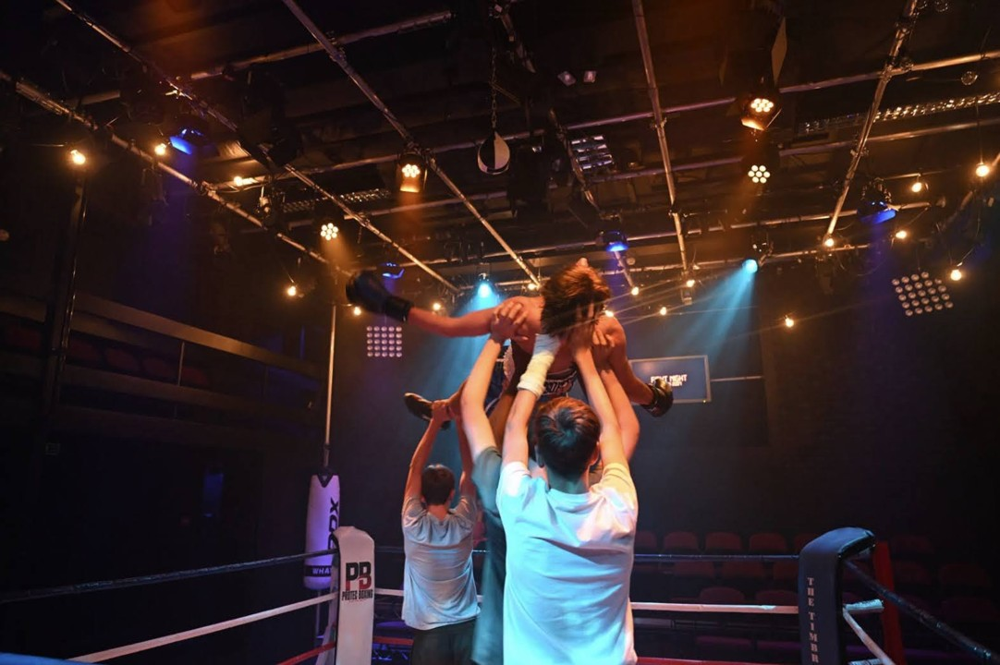
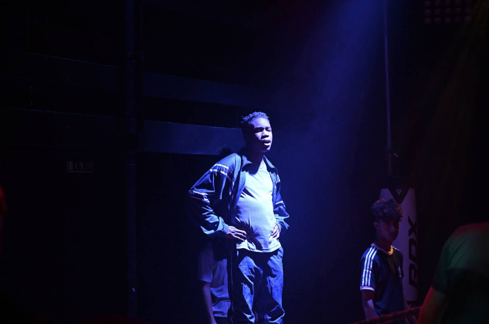
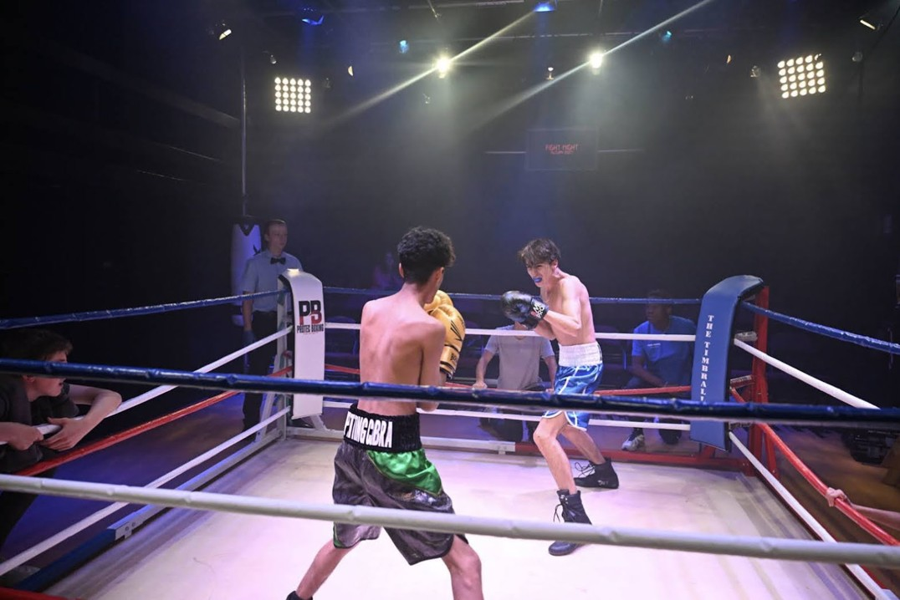
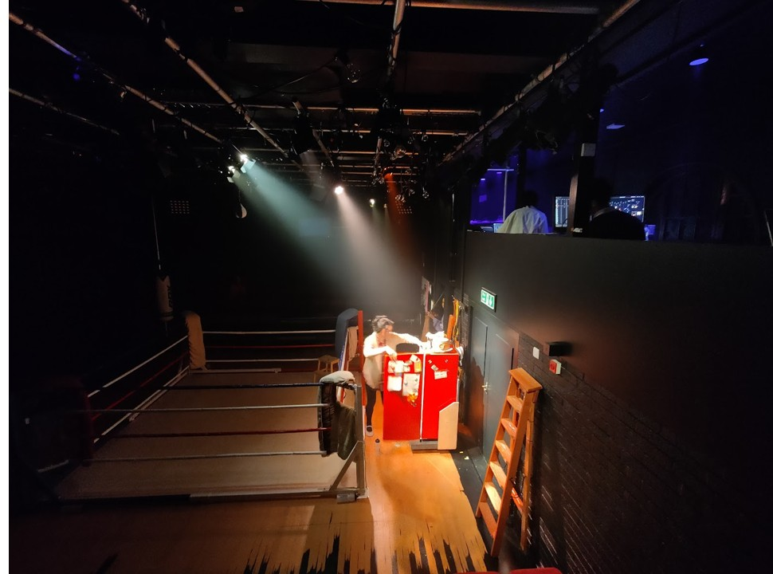
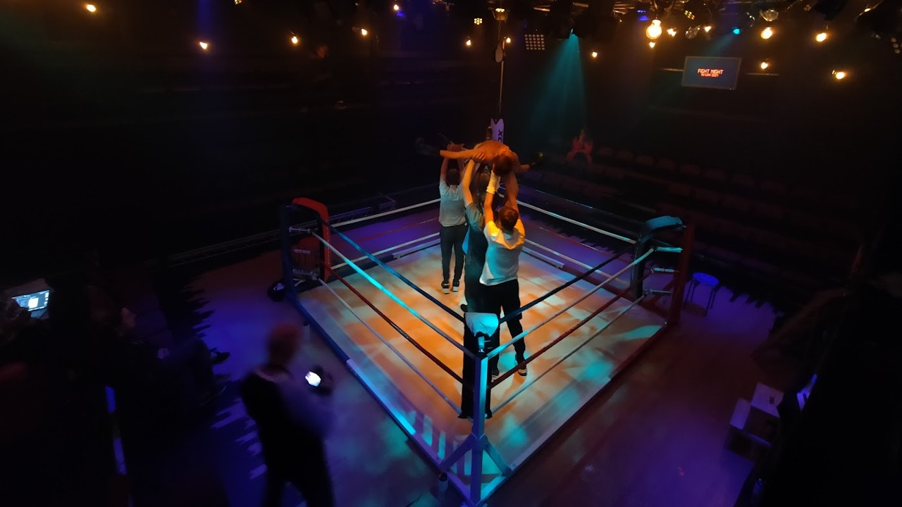
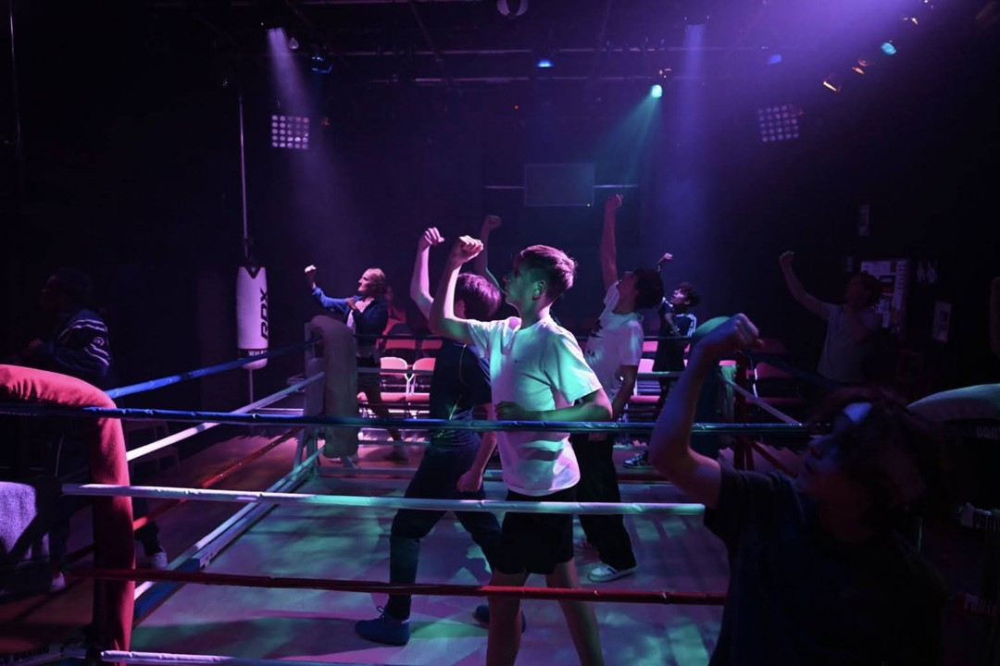
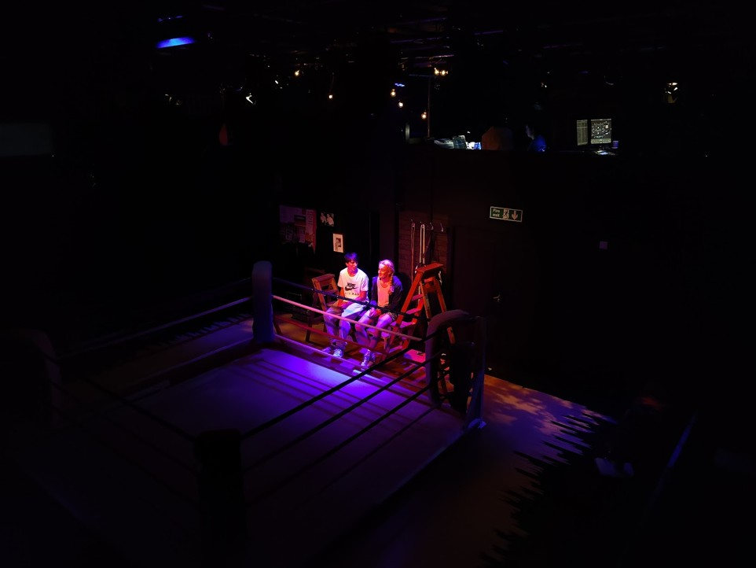

"Beautiful Burnout" (Sep 2022) | design | rigging | programming | video
Beautiful Burnout was the first time I felt I'd managed to develop a real, coherent visual language. The set consisted of a large boxing ring CS and a small acting area around it, with thrust seating (essentially in the round) - my challenge was to create different spaces - a kitchen, an office, a rooftop - in and around this standout set piece. Working in our black-box venue, the Caccia Studio, I designed a versatile rig that gave me fine control of the space. In keeping with Frantic Assembly's original style we heavily stylised the lighting for the movement sequences, contrasting the naturalistic boxing gym.







